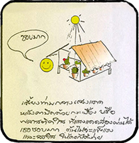
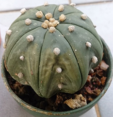
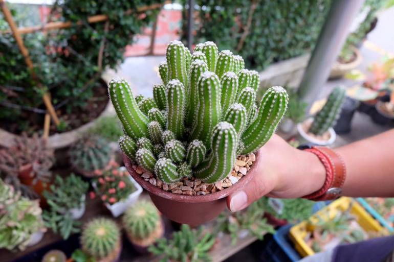

ปัจจัยในการเจริญเติบโต
จะเลี้ยงแคคตัสจะต้องรู้ปัจจัยในการเจริญเติบโตของแคคตัสด้วย
Credit: Cụ Hồng from Pexels
เเนื่องจากแคคตัสเป็นพืชที่อาศัยอยู่ในทะเลทรายที่มีอากาศร้อน และมีฝนตกไม่บ่อยแต่ตกเยอะ ทำให้แคคตัสต้องมีการปรับตัวเพื่ออยู่รอดได้ในสภาพแวดล้อมที่เลวร้ายในทะเลทราย เมื่อเรานำแคคตัสมาปลูกในประเทศไทยที่มีสภาพแวดล้อมต่างจากทะเลทราย เราต้องทำการเลี้ยงแคคตัสให้ใกล้เคียงกับสภาพแวดล้อมของทะเลทรายให้มากที่สุด
แสงแดด
แคคตัส ส่วนมากมีถิ่นกำเนิดในภูมิประเทศที่ร้อน และ แห้งแล้งเพื่อเลียนแบบแคคตัสในธรรมชาติ แคคตัสควรจะได้รับแสงแดดให้นานตลอดวัน เพราะการได้รับแสงแดดที่เต็มที่นี้ จะทำให้แคคตัสแข็งแรงเติบโตได้รูปทรงที่ถูกต้องตามลักษณะสายพันธุ์ ไม่สูงชะลูดหรือผิดรูปทรง และแสงแดดยังทำให้หนามของแคคตัสใหญ่และ ยาวขึ้น ถ้าเป็นต้นที่มีขนสีขาว ขนก็จะขาวขึ้น ถ้าเป็นหนามที่มีสี สีสันก็จะออกจัดจ้านขึ้นด้วย การที่หนามมากขึ้นหรือ หนาขึ้นนั้น เพื่อสร้างการป้องกัน เพื่อปกป้องตัวเองจากแสงแดดนั่นเอง
การให้แดด  แสงที่พอดีสําหรับแคคตัส คือแดดในช่วงครึ่งวันเช้าแต่แคคตัสควรได้รับแสง ตลอดทั้งวันหรือปริมาณแสงแดด 70-80 เปอร์เซ็นต์ในทางกลับกันแคคตัส ไม่สามารถทนต่อแดดที่แรงๆได้จึงควรที่จะหาตาข่ายหรือซาแรนพรางแสน แทนหลังคาเพื่อกรองแสงให้เหลือเพียงประมาณ 50 เปอร์เซ็นต์ ส่วนแคคตัสปลูกใหม่หรือต้นที่พึ่งตัดแต่งรากก่อนเปลี่ยนกระถางควร ค่อยๆนําออกแดดทีละนิด เพื่อให้แคคตัสปรับตัว แล้วค่อยให้แสงแดดตามปกติ
อาการไหม้แดด  แคคตัสมีอาการผิวเปลี่ยนสีจากสีเขียวกลายเป็นสีน้ำตาล กระดำกระด่าง เนื่องจากโดนแดดมากเกินไป วิธีการรักษาคือควรย้ายแคคตัสไปไว้ในที่ที่แดดไม่แรง หรือมีซาแรนพรางแสง ถ้าอาการไหม้แดดไม่รุนแรงมากจะสามารถหาย เองได้ โดยจะมีการสร้างเนื้อเยื่อขึ้นมาใหม่ แต่ค่อยๆไล่รอยแผลลงไปด้านล่าง ส่วนวิธีการรักษาต้นแคคตัสที่มีลักษณะนิ่มหมือนเนื้อด้านในสุกจากการ โดนแดดมากเกินไป ให้ปาดส่วนที่นิ่มทิ้งไป จากนั้นคอยรักษาความสะอาด และระวังไม่ให้มีความชื้นมากเกินไปเพราะความชื้นทำให้เกิดเชื้อราจากนั้นรอให้ต้นแตกหน่อขึ้นมาใหม่
ลำต้นเอียงผิดรูป  ลำต้นเอียงไปเฉียงมาผิดทรง เพราะได้รับแดดไม่เพียงพอ วิธีแก้คือให้หมุนแคคตัสด้านที่เอียงเข้าหาแดดให้ได้โดนแดดบ้างแล้วแคคตัสก็จะกลับมาตั้งตรง เหมือนเดิม
น้ำ

แคคตัสเป็นพืชในแถบบริเวณทะเลทราย แห้งแล้ง ที่ที่มีน้ำน้อยทำให้มันต้องปรับตัวให้ สามารถ อยู่รอดในสภาพภูมิอากาศที่ร้อนได้ด้วยเหตุนี้มันจึงเป็นพืชที่ไม่ต้องการน้ำมากแต่ น้ำก็เป็น สิ่งสำคัญในการเจริญเติบโตของแคคตัสเช่นกัน
วิธีการรดน้ำ วิธีที่ดีที่สุด คือ การใช้ฝักบัวรดน้ำ โดยรดให้น้ำไหลผ่านดินและซึมลงจนไหล ออกทางรูระบายน้ำบริเวรกันกระถาง การรดน้ำ ควรรดเมื่อเครื่องปลูกแห้งสนิท
สังเกตเครื่องปลูกว่าแห้งหรือยัง
1. ยกกระถาง ถ้าน้ำหนักเบา แสดงว่าแห้งแล้ว หรือดูผ่านรู้ก้นกระถางดู วัสดุรองก้นกระถาง ถ้าแห้งแล้วแสดงว่าสามารถรดน้ำได้ แต่วิธีนี้บอกไม่ได้ร้อยเปอร์เซ็นต์ว่าดินภายในจะแห้งสนิทจริงๆ
2. ใช้ไม้จิ้มฟัน หรือไม้ที่มีปลายแหลมจิ้มลงไปในดิน ถ้าดึงขึ้นมาแล้วมีดินชื้นติดขึ้นมา แสดงว่ายังไม่แห้ง แต่ถ้าดึงขึ้นมาแล้วไม่มีดินชื้นติดขึ้นมาด้วย แสดงว่าแห้งแล้ว สามารถรดน้ำได้ แต่ไม่ควรจิ้มลงไปในดินนาน จะทำให้ไม้จิ้มได้รับความชื้นมากไป ทำให้ดูไม่ออกว่าดินแห้งสนิทหรือยัง
ต้องรดน้ำเมื่อไหร่
การรดน้ำแคคตัส ควรรดสัปดาห์ละ 1-2 ครั้ง ขึ้นอยู่กับหลายๆปัจจัย ได้แก่
1. แสงแดด ถ้าแคคตัสได้รับแสงแดดมาก ดินจะแห้งเร็ว และต้องการน้ำมากขึ้น
2. อากาศ ที่ที่มีอากาศถ่ายเทสะดวก น้ำจะระเหยเร็วกว่าที่ที่ไม่มีลม
3. ฤดูกาล ฤดูหนาวกับฤดูฝน ควรรดน้ำให้น้อยกว่าปกติ
4. ชนิดของกระถาง กระถางแต่ละชนิดสามารถเก็บความชื้นได้ไม่เท่ากัน
5. ขนาดของกระถาง ถ้ากระถางใบเล็ก น้ำจะระเหยเร็วกว่าใบใหญ่
6. วัสดุปลูก ถ้าดินมาความร่วน และโปร่งจะสามารถระบายน้ำได้ดี
7. สายพันธุ์ แต่ละสายพันธุ์ชอบน้ำไม่เท่ากัน
ปล.เรื่องช่วงเวลาการรดน้ำระหว่างรดช่วงเช้าหรือช่วงเย็นดี ยังเป็นที่ถกเถียงกันอยู่ในวงการแคคตัส แต่สำหรับแอด แอดรดช่วงเย็นเพราะมีความเชื่อว่าถ้ารดช่วงเย็นน้ำจะระเหยทันตอนแดดออก ถ้าน้ำยังขังอยู่ในดิน และแดดส่องลงมาจะทำให้น้ำร้อน เหมือนเป็นการต้มน้ำในกระถางอาจทำให้รากแคคตัสไม่แข็งแรง